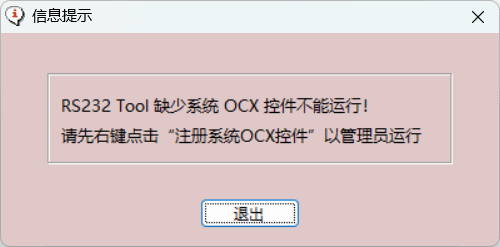
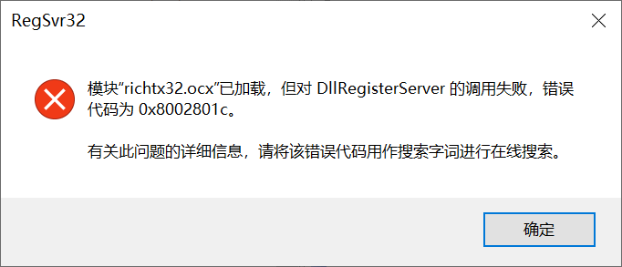
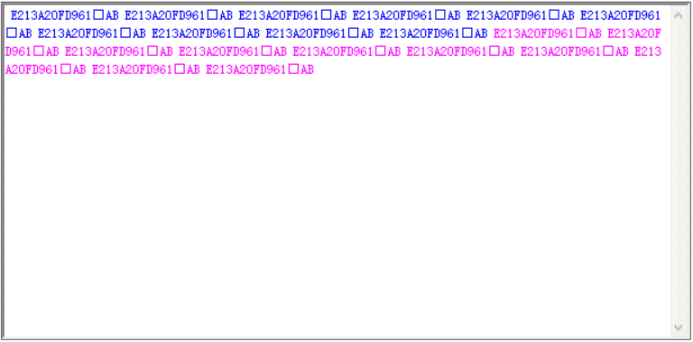

常见问题释疑
1 点击 “RS232Tool” 启动运行时出现弹窗提示
点击 “RS232Tool” 软件启动运行时若出现下面弹窗提示，表明软件所用到的 Windows 系统 OCX 控件在系统中没有注册，应先进行控件注册。
控件注册方法：
鼠标右键点击软件文件夹下“注册系统OCX控件” 批处理文件->选择“以管理员身份运行” ->系统提示注册成功。

控件注册时若出现下面弹窗，则说明没有选择“以管理员身份运行” ，控件注册不成功，应按前述操作选择“以管理员身份运行” 。

2 串口通讯时接收区数据显示不自动换行
如图，界面中不同时段的接收区数据全部显示在一块，没有换行区分显示。原因一是勾选了“□按标志符换行” ，但没有正确设置结尾标志符，当前设置的结尾标志符与所用仪表通讯命令的实际结尾标志符不一致，重新设置正确的结尾标志符即可。原因之二是自动换行时，两次接收到的字串其间隔时间过短，无法实现自动换行而显示在一块了，此时选择“按标志符换行” 即可。
若是其它原因造成可点击【清空 】或勾选“□自动清空”。

3 如何测试串行通讯稳定性
串行通讯的目的无外乎就是设备之间交换数据，交换对象可在电脑与智能仪表或 PLC 之间，或智能仪表与 PLC 之间等等。其中通讯稳定性是进行交换数据分析的重要一环，通过稳定性分析测试，查找产品软硬件设计缺陷，指导设计完善。
稳定性分析。比较接收行数与发送次数是否保持一致，一般设备通讯基本上是发送一次、返回一次。同时，还可观察字符计数的累计数值改变情况及接收数据内容，是否符合控制预期。若经较长一段时间通讯，接收行数与发送次数能够保持一致，说明通讯稳定性较好；若接收行数与发送次数只有很小差别，说明通讯稳定性尚可，误差率低。
测试通讯稳定性的一般步骤
1. 将智能仪表或 PLC 的通讯口与电脑串口（RS232/RS485/RS422）用通讯电缆相连接；
2. 选择对应串口，如 “COM1”；
3. 设定串口的通讯协议，包括波特率、数据位、停止位及校验方式，通讯双方要完全一致；
4. 设置通讯命令，输入或通过通讯命令表选择所需通讯命令；
5. 将自动发送的 “周期” 设定为一适当的时间间隔；
6. 点击【清计数】，清0接收行数、发送次数及字符计数；
7. 点击【打开串口】；
8. 勾选 “□自动发送” 选项，开始通讯测试。